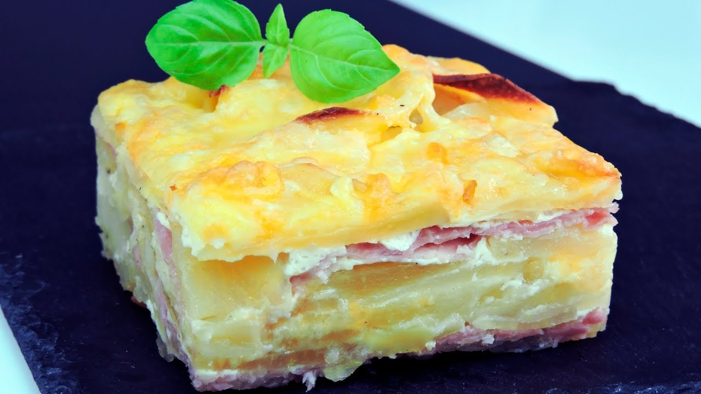

Almuerzo
Queso frito con papas nativas
‚è±Ô∏è 20 min| üî• Fácil
⭐⭐⭐
Crujiente por fuera y suave por dentro, acompañado con papas andinas y salsas caseras.
Almuerzo
Chupe de queso
‚è±Ô∏è 40 min | üî• Media
⭐⭐⭐⭐
Sopa cremosa a base de leche, papas y queso fresco serrano, típica de Huancayo y Ayacucho.
Postre
Queso con miel de caña
‚è±Ô∏è 15 min | üî• Fácil
⭐⭐⭐⭐
Lonjas de queso artesanal bañadas con miel de chancaca, un postre dulce y rústico.
Desayuno
Ensalada de queso serrano con quinua
‚è±Ô∏è 25 min | üî• Fácil
⭐⭐
Fresca y nutritiva, mezcla de quinua cocida, verduras y cubitos de queso artesanal.

Almuerzo
Pastel de papa con queso
‚è±Ô∏è 35 min | üî• Medio
⭐⭐⭐⭐
Capas de papa andina con relleno de queso derretido, ideal para reuniones familiares.
Desayuno
Tamal de queso
‚è±Ô∏è 50 min | üî• Dificil
⭐⭐⭐⭐⭐
Masa de maíz rellena con queso fresco, cocida al vapor en hojas de maíz o plátano.

Postre
Queso helado artesanal
‚è±Ô∏è 2 hrs (congelaci√≥n) | üî• Fácil
⭐⭐⭐⭐
Postre arequipeño hecho con leche y ralladuras de queso artesanal, servido bien frío.

Almuerzo
Choclo con queso andino
‚è±Ô∏è 20 min | üî• Fácil
⭐⭐⭐⭐⭐
Clásico plato serrano: mazorca cocida con trozos de queso fresco, acompañado con ají molido.